Taiji, Wakayama: things to do, food and stays
Taiji · Wakayama
Taiji
Highlighted on the Wakayama map.
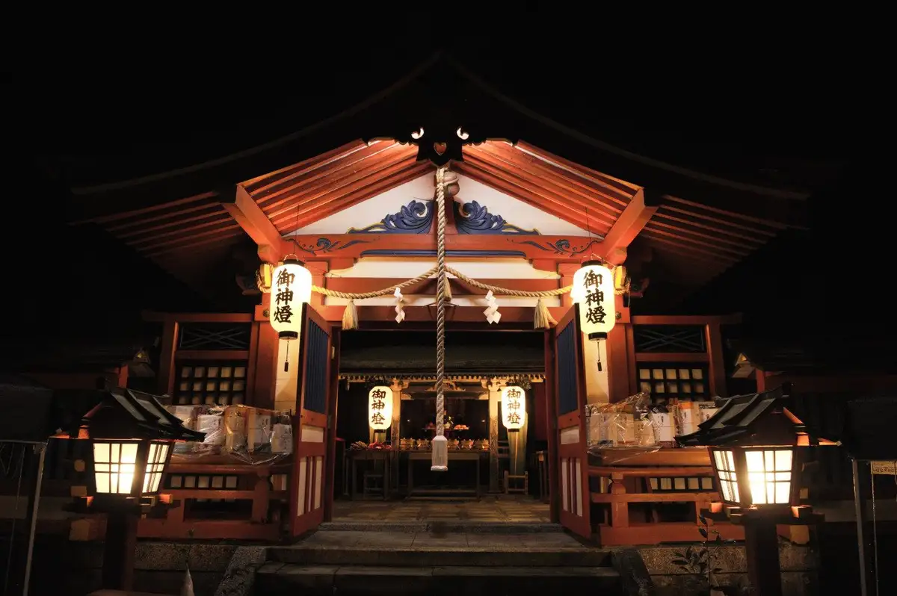
Stay
花いろどりの宿 花游
Hana Irodorino Yado Hana Yu
HOTEL HOLISTIC RESORT
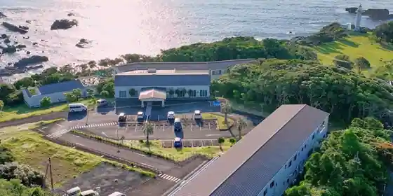
HOTEL HOLISTIC RESORT
グランオーシャンリュクス海熊野
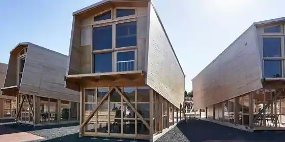
Guran'Oshanryukusu Umi Kumano
Dining
くじら家
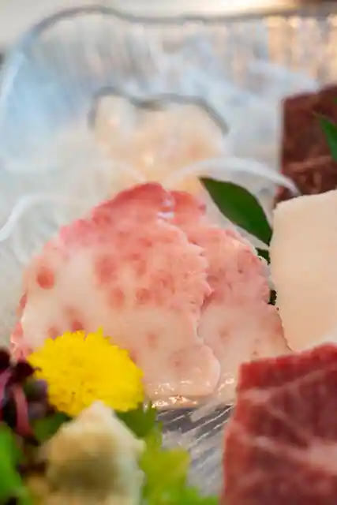
Kujira Ie
道の駅 たいじ
Michi No Eki Taiji
いさなの宿 白鯨
Isanano Yado Hakugei
那智黒本舗
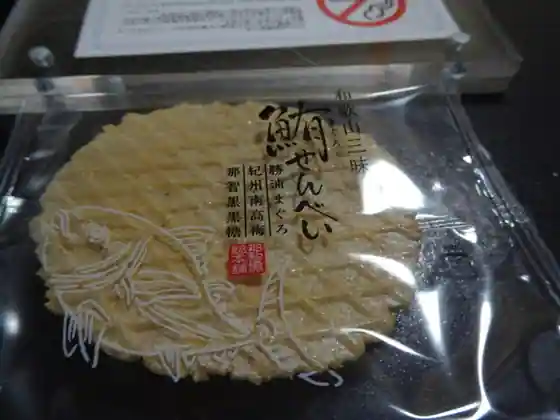
Nachi Kurohon Ho
しっぽ
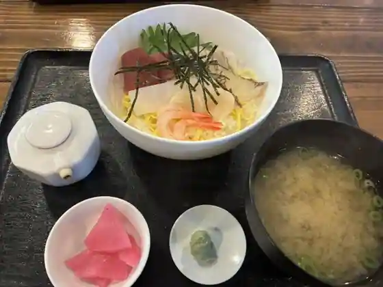
Shippo
亀八屋
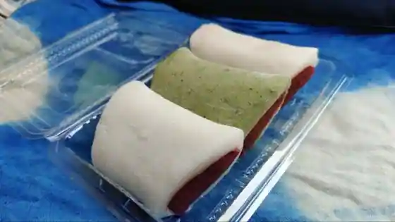
Kamehachi Ya
レストラン・ナチュール
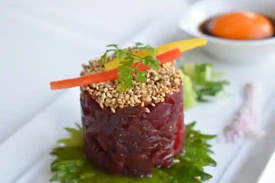
Restaurant Nachuru
Ohana
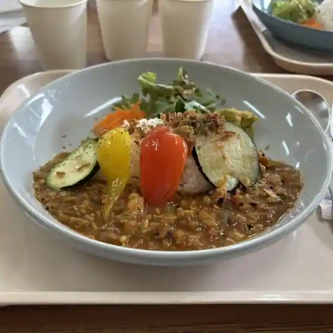
Ohana
漁火
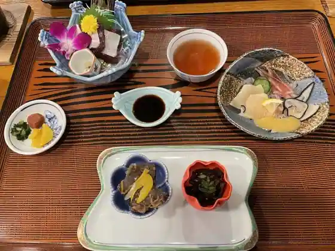
Isaribi
ピザハウス くじら
Pizza House Kujira
ポートインくじら浜
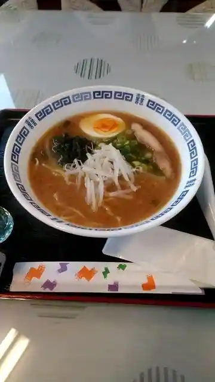
Potoin Kujira Hama
花いちもんめ
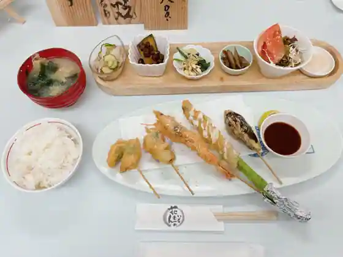
Hana Ichimonme
ちゅらさん工房
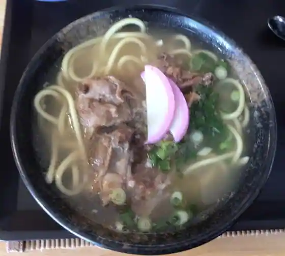
Churasan Kobo
いなほのパン屋
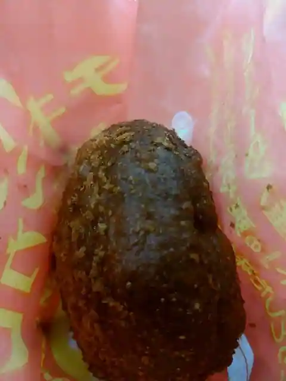
Inahono Bakery Ya
ホリスティックスペースジャパン ライブラリーカフェ
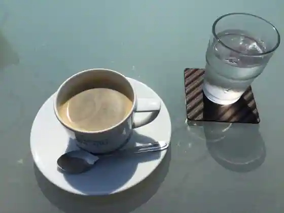
Horisuteikkusupesuja Bakery Raiburari Cafe
Sights
Taiji Ritsu Kujira no Museum
Kujira Hama Beach (Kujirani Deae Ru Beach)
Roadside Station Taiji
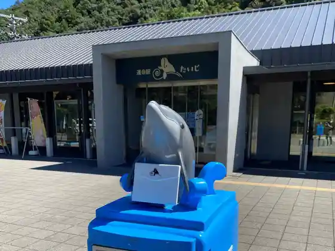
Taiji Onsen Hana Irodori no Hana Yu
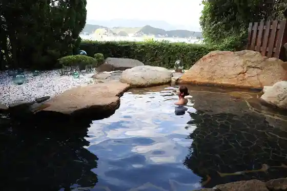
Taiji Kujira Hama Park
Kokusai Geirui Shisetsu
Kajitori Saki
Asuka Shrine
Kujira no Monyumento
Tomyo Saki
Ebisu Shrine
Tomei Tera Kujira Kuyo Hi
Mamako to
Kajitori Saki Kujira Kuyo Hi